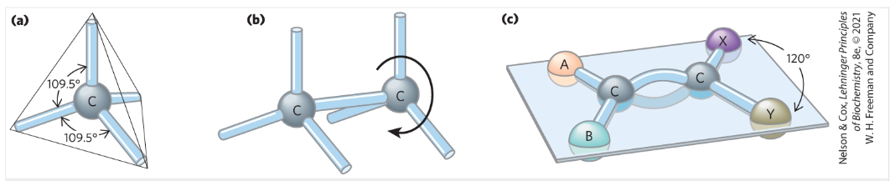
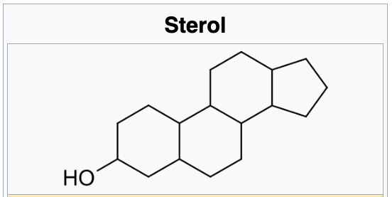
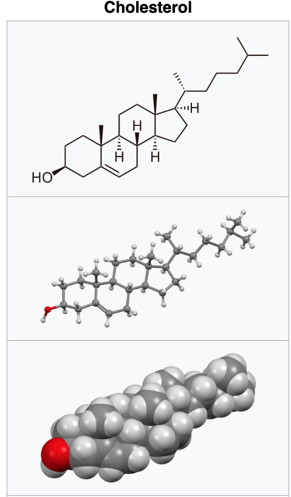

Carbon Bonding
a. Carbon atoms have a characteristic tetrahedral arrangement of their four single bonds.
b. C-C single bonds have freedom of rotation, as shown for the compound ethane, CH3-CH3.
c. Double bonds are shorter and do not allow free rotation. The two doubly bonded carbons and the atoms designated A,B,X and Y all lie in the same rigid plane.
Hydrocarbon Molecules
Covalently linked carbon atoms in biomolecules can form linear chains, branched chains, and cyclic structures. This bonding versatility likely led to the selection of carbon compounds for the molecular machinery of cells during the origin and evolution of living organisms. No other element can form molecules of such widely different sizes, shapes, and composition.Most biomolecules can be regarded as derivatives of hydrocarbons, with hydrogen atoms replaced by a variety of functional groups, forming families of organic compounds:
- alcohols, with one or more hydroxyl groups
- amines, with amino groups
- aldehydes, with carbonyl groups
- ketones, with carbonyl groups
- carboxylic acids, with carboxyl groups
Sterols and Cholesterol
Cholesterol is the principal sterol of all higher animals, distributed in body tissues, especially the brain and spinal cord, and in animal fats and oils. Sterol is an organic compound with formula C17H28O, whose molecule is derived from that of gonane by replacement of a hydrogen atom on C3 position by a hydroxyl group. It is therefore an alcohol of gonane. More generally, any compounds that contain the gonane structure, additional functional groups, and/or modified ring systems derived from gonane are called steroids. Therefore, sterols are a subgroup of the steroids. They occur naturally in most eukaryotes, including plants, animals, and fungi, and can also be produced by some bacteria (however likely with different functions). The most familiar type of animal sterol is cholesterol, which is vital to cell membrane structure, and functions as a precursor to fat-soluble vitamins and steroid hormones.
While technically alcohols, sterols are classified by biochemists as lipids (fats in the broader sense of the term). 
Function in membranes
Cholesterol is present in varying degrees in all animal cell membranes, but is absent in prokaryotes. It is required to build and maintain membranes and modulates membrane fluidity over the range of physiological temperatures. The hydroxyl group of each cholesterol molecule interacts with water molecules surrounding the membrane, as do the polar heads of the membrane phospholipids and sphingolipids, while the bulky steroid and the hydrocarbon chain are embedded in the membrane, alongside the nonpolar fatty-acid chain of the other lipids. Through the interaction with the phospholipid fatty-acid chains, cholesterol increases membrane packing, which both alters membrane fluidity and maintains membrane integrity so that animal cells do not need to build cell walls (like plants and most bacteria). The membrane remains stable and durable without being rigid, allowing animal cells to change shape and animals to move.The structure of the tetracyclic ring of cholesterol contributes to the fluidity of the cell membrane, as the molecule is in a trans conformation making all but the side chain of cholesterol rigid and planar. In this structural role, cholesterol also reduces the permeability of the plasma membrane to neutral solutes, hydrogen ions, and sodium ions.